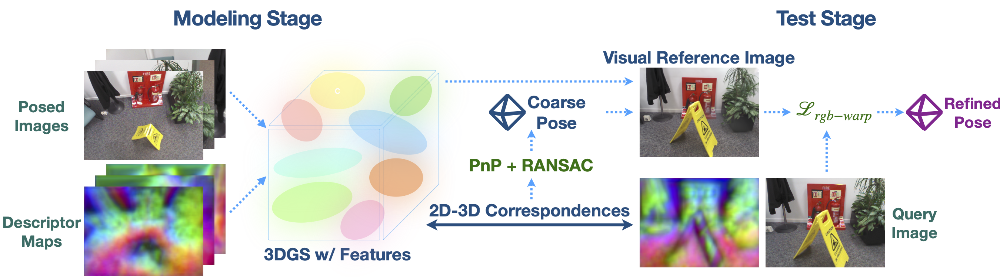
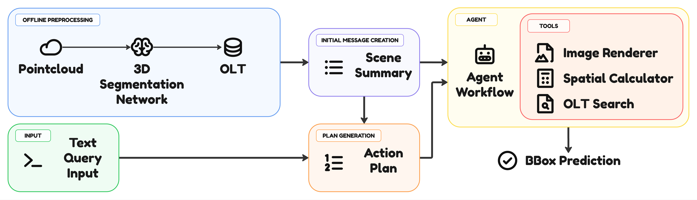
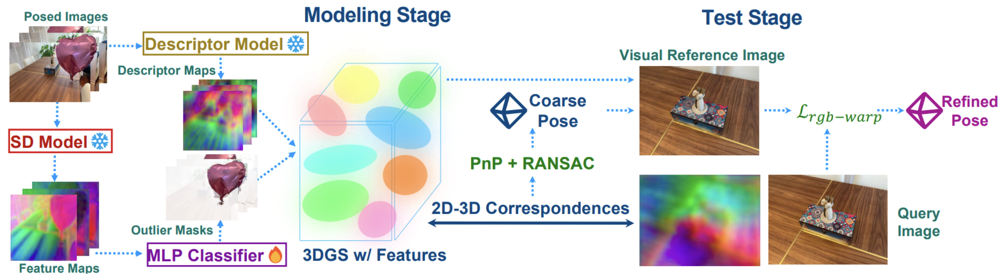

Visual localization
Grounding local keypoint descriptors into 3D Gaussian Splatting representations to improve localization in complex indoor/outdoor scenes.
AI / Robotics / Computer Vision
AI Researcher and Computer Vision Engineer working on multimodal agents for robotics, 3D scene understanding, dynamic scene reconstruction, and visual localization.
Researcher at the International Laboratory of Embodied Intelligence and Robotics, ITMO University. Research and R&D experience in robotics perception, Gaussian Splatting and VLM agents.
Research agenda
My work connects geometric representations, neural rendering, and multimodal reasoning for robotics applications.
Grounding local keypoint descriptors into 3D Gaussian Splatting representations to improve localization in complex indoor/outdoor scenes.
Semantic-aware Gaussian Splatting and dynamic reconstruction with rigid-body constraints for efficient scene representation.
Tool-augmented VLM agents for zero-shot 3D visual grounding and point cloud understanding in robotics-oriented settings.
Publications

assets/gsplatloc-pipeline.pngVisual localization method that connects keypoint descriptors with 3D Gaussian Splatting scene representations.

assets/r5dgs-pipeline.pngDynamic reconstruction approach combining semantic awareness, 4D Gaussian Splatting, and rigid-body constraints.

assets/agentgrounder-pipeline.pngZero-shot 3D visual grounding in point clouds using multimodal language models and agentic reasoning.
Tool-augmented agent framework for VLM-based zero-shot grounding over 3D visual data.

assets/gsplatloc-journal-pipeline.pngJournal article in Izvestiya vuzov. Priborostroenie, 68(9), 781–791.
Skills
Scientific prototyping and applied computer vision R&D for industrial partners.